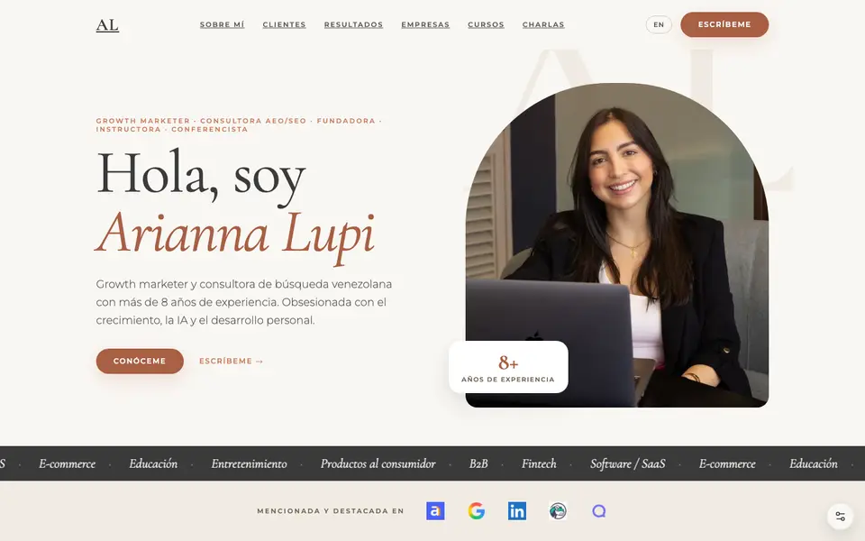
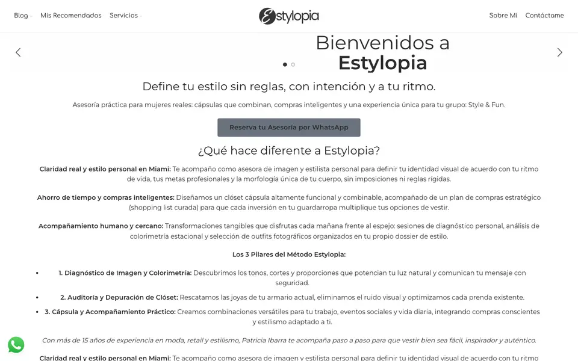

Ingeniero de software y consultor SEO técnicoSoftware engineer and technical SEO consultant
Arreglo el SEOdesde el código I fix SEOfrom the code
Soy ingeniero y arreglo lo que frena a Google en tu sitio. Audito, corrijo en el código y mido el resultado.I am an engineer and I fix what holds Google back on your site. I audit, I fix the code and I measure the result.
- Core Web Vitals
- Next.js
- hreflang
- Payload CMS
- canonical
- LCP
- sitemap
- schema
- TTFB
- crawl budget
- GEO
- INP
MediciónMeasurement
Lo que mido antes de tocar nadaWhat I measure before touching anything
Cuatro lecturas me dicen dónde duele un sitio. Aprende a leerlas: la barra marca el rango que Google considera bueno, mejorable y pobre.Four readings tell me where a site hurts. Learn to read them: the bar shows the range Google rates good, needs improvement and poor.
PENDIENTE medirPENDING measurement Los valores de esta franja son de muestra e ilustrativos. No son mediciones reales de ningún sitio.The values in this strip are samples and illustrative. They are not real measurements of any site.
-
LCP
Cuánto tarda en pintarse el elemento principalHow long the main element takes to paint
1.8 s
Bueno: hasta 2.5 sGood: up to 2.5 s
Muestra ilustrativaIllustrative sample
-
CLS
Cuánto se mueve el diseño mientras cargaHow much the layout shifts while loading
0.05
Bueno: hasta 0.1Good: up to 0.1
Muestra ilustrativaIllustrative sample
-
INP
Cuánto tarda la página en responder a un toqueHow long the page takes to respond to a tap
120 ms
Bueno: hasta 200 msGood: up to 200 ms
Muestra ilustrativaIllustrative sample
-
TTFB
Cuánto tarda el servidor en dar el primer byteHow long the server takes to send the first byte
0.4 s
Bueno: hasta 0.8 sGood: up to 0.8 s
Muestra ilustrativaIllustrative sample
Esquema de panelDashboard sketch
Dibujo esquemático de cómo leo Search Console: barras para clics por página y una línea para la tendencia. No contiene datos reales.A schematic of how I read Search Console: bars for clicks per page and a line for the trend. It holds no real data.
ServiciosServices
Qué arreglo y cómo lo arregloWhat I fix and how I fix it
-
SEO técnicoTechnical SEO
Audito rastreo, indexación y datos estructurados. Primero miro qué ve Googlebot y después decido qué tocar.I audit crawling, indexation and structured data. First I look at what Googlebot sees, then I decide what to touch.
- hreflang
- canonical
- sitemap
- schema
-
Desarrollo Next.js y PayloadNext.js and Payload development
Construyo con Next.js y Payload CMS. El SEO entra desde el primer commit y no como parche al final.I build with Next.js and Payload CMS. SEO goes in from the first commit, not as a patch at the end.
-
Infraestructura y servidoresInfrastructure and servers
Configuro el servidor, los headers y la caché. Un TTFB alto empieza en el servidor, no en el diseño.I set up the server, headers and cache. A high TTFB starts at the server, not in the design.
-
Rendimiento webWeb performance
Mido LCP, CLS e INP y corrijo lo que más pesa: imágenes, fuentes y JavaScript.I measure LCP, CLS and INP and fix what weighs most: images, fonts and JavaScript.
-
SEO para IA y GEOAI SEO and GEO
Estructuro el contenido para que ChatGPT, Perplexity y las respuestas de IA de Google lo citen.I structure content so ChatGPT, Perplexity and Google AI answers cite it.
-
Auditoría técnicaTechnical audit
Revisión completa de rastreo, indexación, Core Web Vitals y datos estructurados, con un plan priorizado por impacto. La entrego en 10 días hábiles.Full review of crawling, indexation, Core Web Vitals and structured data, with a plan ranked by impact. I deliver it in 10 business days.
600 USD
Se descuentan del trabajo posteriorCredited toward the work that follows
Pedir auditoríaRequest an audit
Árbol de rastreoCrawl tree
Así sigue Googlebot los enlaces de un sitio. El verde se indexa, el amarillo pasa por una redirección, el tomate lleva noindex y la página con borde punteado queda huérfana: nadie la enlaza.This is how Googlebot follows a site's links. Green gets indexed, yellow goes through a redirect, tomato carries noindex and the dashed page is orphaned: nobody links to it.
CasosCase studies
Tres casos con números de Search ConsoleThree cases with Search Console numbers
Cada número compara los clics del año contra el año anterior, en el mismo periodo. Los clientes van anonimizados.Each number compares clicks year over year, over the same period. Clients stay anonymous.
-
Salud, urologíaHealthcare, urology
De casi cero visibilidad a un año de crecimiento sostenido para un urólogoFrom near-zero visibility to a year of sustained growth for a urologist
+406%clics interanualesyear over year clicks
Leer el caso completoRead the full case -
Servicios legales, inmigraciónLegal services, immigration
Cuadruplicar el tráfico orgánico de un despacho de inmigración en un añoQuadrupling organic traffic for an immigration law firm in one year
+309%clics interanualesyear over year clicks
Leer el caso completoRead the full case -
Servicios legales, defensa criminalLegal services, criminal defense
Escalar el contenido legal educativo a más de 86 000 clics orgánicos anuales para un despacho de defensa criminalScaling educational legal content to over 86 000 annual organic clicks for a criminal defense firm
+83%clics interanualesyear over year clicks
Leer el caso completoRead the full case
ProcesoProcess
Cómo trabajo en cuatro pasosHow I work in four steps
AuditoAudit
Reviso rastreo, indexación, Core Web Vitals y datos estructurados. Empiezo por lo que Google ve hoy.I review crawling, indexation, Core Web Vitals and structured data. I start with what Google sees today.
PriorizoPrioritize
Ordeno los hallazgos por impacto real y no por cantidad de avisos.I rank findings by real impact, not by the number of warnings.
CorrijoFix
Aplico el cambio en el código yo mismo, o dejo el cambio exacto para que tu equipo lo aplique.I apply the change in the code myself, or I leave the exact change for your team to apply.
MidoMeasure
Comparo contra Search Console y Core Web Vitals reales, antes y después.I compare against Search Console and real Core Web Vitals, before and after.
Websites
Sitios web que construíWebsites I built
PENDIENTEPENDING Fecha y herramienta de la medición de cada puntaje. Capturas reales de los sitios.Date and tool for each score. Real screenshots of the sites.
-
Abrir apturio.com en otra pestañaOpen apturio.com in a new tab
Apturio
Software y SaaSSoftware and SaaS
83Performance
-

Abrir ariannalupi.com en otra pestañaOpen ariannalupi.com in a new tabArianna Lupi
Marca personal y coachingPersonal brand and coaching
73Performance
-

Abrir estylopia.com en otra pestañaOpen estylopia.com in a new tabEstylopia
Retail y estilo personalRetail and personal styling
67Performance
Sobre míAbout me
Soy Juan y esto es lo que hagoI am Juan and this is what I do
Soy ingeniero de software y trabajo el SEO desde el código. Construyo con Next.js y con un CMS headless como Payload, diseño el SEO desde el primer commit y audito antes de construir.I am a software engineer and I work on SEO from the code. I build with Next.js and a headless CMS like Payload, I design SEO from the first commit and I audit before I build.
Cuido la accesibilidad y el diseño mobile-first. Trabajo en español e inglés.I care about accessibility and mobile-first design. I work in Spanish and English.
- 15proyectos de SEOSEO projects
- 13proyectos de desarrollodevelopment projects
- SEO técnicoTechnical SEO
- Rendimiento webWeb performance
- InfraestructuraInfrastructure
- Arquitectura escalableScalable architecture
- AccesibilidadAccessibility
Capas de mi stackLayers of my stack
Así apilo un proyecto: Next.js al frente, Payload como CMS, PostgreSQL debajo y el servidor en la base.This is how I stack a project: Next.js up front, Payload as the CMS, PostgreSQL below and the server at the base.
TestimoniosTestimonials
Lo que dicen quienes trabajaron conmigoWhat people who worked with me say
Trabajar con Juan fue lo mejor.Working with Juan was the best.
Testimonio pendiente, ejemplo de maquetaTestimonial pending, mockup example
[PENDIENTE]RolRole [PENDIENTE], empresacompany [PENDIENTE]Testimonio pendiente, ejemplo de maquetaTestimonial pending, mockup example
[PENDIENTE]RolRole [PENDIENTE], empresacompany [PENDIENTE]Testimonio pendiente, ejemplo de maquetaTestimonial pending, mockup example
[PENDIENTE]RolRole [PENDIENTE], empresacompany [PENDIENTE]Testimonio pendiente, ejemplo de maquetaTestimonial pending, mockup example
[PENDIENTE]RolRole [PENDIENTE], empresacompany [PENDIENTE]Testimonio pendiente, ejemplo de maquetaTestimonial pending, mockup example
[PENDIENTE]RolRole [PENDIENTE], empresacompany [PENDIENTE]Testimonio pendiente, ejemplo de maquetaTestimonial pending, mockup example
[PENDIENTE]RolRole [PENDIENTE], empresacompany [PENDIENTE]Testimonio pendiente, ejemplo de maquetaTestimonial pending, mockup example
[PENDIENTE]RolRole [PENDIENTE], empresacompany [PENDIENTE]
PENDIENTEPENDING Solo existe una cita real. Las demás tarjetas son ranuras de muestra para ver cómo escala la sección. La traducción al inglés de la cita real es provisional y falta confirmarla con la clienta.Only one quote is real. The other cards are sample slots to show how the section scales. The English translation of the real quote is provisional and still needs the client's confirmation.
FAQ
Preguntas frecuentesFrequently asked questions
¿Qué incluye la auditoría técnica?What does the technical audit include?
Reviso rastreo, indexación, Core Web Vitals y datos estructurados. Entrego un plan de corrección ordenado por impacto.I review crawling, indexation, Core Web Vitals and structured data. I deliver a fix plan ranked by impact.
¿Cuánto cuesta y cuánto tarda?How much does it cost and how long does it take?
La auditoría cuesta 600 USD y la entrego en 10 días hábiles. Esos 600 se descuentan del trabajo posterior.The audit costs 600 USD and I deliver it in 10 business days. Those 600 are credited toward the work that follows.
¿Trabajas con mi equipo de desarrollo?Do you work with my development team?
Sí. Corrijo el código yo mismo o dejo el cambio exacto para que tu equipo lo aplique.Yes. I fix the code myself or I leave the exact change for your team to apply.
¿Cómo mido el éxito de las optimizaciones?How do I measure the success of the optimizations?
Comparo Search Console y Core Web Vitals reales antes y después. Los números de los casos salen de ahí.I compare Search Console and real Core Web Vitals before and after. The numbers in the cases come from there.
¿En qué idiomas trabajas?Which languages do you work in?
Trabajo en español e inglés. Audito, escribo y construyo en los dos idiomas.I work in Spanish and English. I audit, write and build in both languages.
ContactoContact
Hablemos de tu sitioLet's talk about your site
¿Tienes un proyecto en mente? Cuéntame de qué se trata y empiezo por mirar qué ve Google hoy.Got a project in mind? Tell me about it and I start by looking at what Google sees today.
PENDIENTEPENDING Plazo de respuesta real.Real response time.